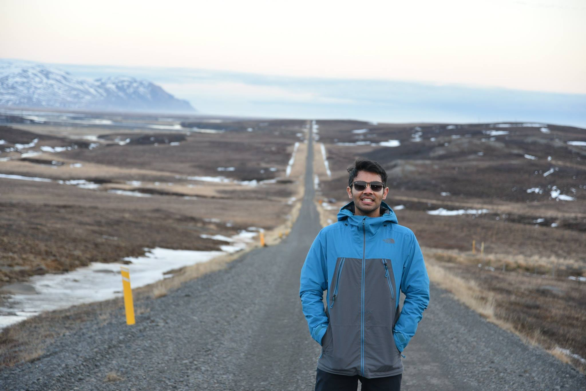

`
Dushyant Sahoo
Dushyant Sahoo
PhD Student
Department of Electrical & Systems Engineering
University of Pennsylvania
Link to: CV (last updated: October 2021)
|
|

|
About Me
I am a fifth year Ph.D. student in the Department of Electrical & Systems Engineering at the University of Pennsylvania, working with Prof. Christos Davatzikos. I completed bachelors and masters in electrical engineering at Indian Institue of Technology, Delhi . You can see a current list of my papers here.
I enjoy cycling and inline skating (see my strava), backcountry skiing, traveling and painting (see my instagram ) in my spare time.
Publications
-
Learning Robust Hierarchical Patterns of Human Brain across Many fMRI Studies
Dushyant Sahoo and Christos Davatzikos
NeurIPS 2021
-
Variance reduced stochastic proximal algorithm for auc maximization
Dushyant Sahoo and Soham Dan
ECML 2021
-
Extraction of Hierarchical Functional Connectivity Components in human brain using Adversarial Learning
Dushyant Sahoo and Christos Davatzikos
arXiv 2021
-
Early Stopping can Improve Langevin Dynamics Sampling
Dushyant Sahoo, Alnur Ali and Edgar Dobriban
arXiv 2021
-
Hierarchical extraction of functional connectivity components in human brain using resting-state fMRI (journal paper)
Dushyant Sahoo, Theodore D Satterthwaite, Christos Davatzikos
IEEE TMI 2020
-
Variance reduced stochastic proximal algorithm for auc maximization (workshop paper)
Dushyant Sahoo and Soham Dan
OPT-NeurIPS 2020
-
Extraction of hierarchical functional connectivity components in human brain using resting-state fMRI (wokshop paper)
Dushyant Sahoo, Danielle Bassett and Christos Davatzikos
Med-NeurIPS 2019
-
Sparse low-dimensional causal modeling for the analysis of brain function
Dushyant Sahoo, Nicolas Honnorat and Christos Davatzikos
SPIE 2019
-
GPU accelerated extraction of sparse Granger causality patterns (oral)
Dushyant Sahoo, Nicolas Honnorat and Christos Davatzikos
ISBI 2018
-
Effect of MRI scanner parameters on breast cancer radiomics and radiogenomics (journal paper)
Ashirbani Saha, Xiaozhi Yu, Dushyant Sahoo and Maciej A. Mazurowski
ESWA 2017
-
On using error correction for Mobile Augmented Reality applications
N. Narendra, Dushyant Sahoo, Pavan K. Reddy, Ashley Varghese, Kriti Kumar, M. Girish Chandra and P. Balamuralidhar
ICSCN 2015
-
Offline handwritten word recognition using MQDF-HMMs
Sitaram Ramachandrula, Mangesh Hambarde, Ajay Patial, Dushyant Sahoo and Shaivi Kochar
SPIE 2015
Posters
-
Interactions of Default Mode Network with Language Regions Using Full Brain Autoregressive Modelling
Dushyant Sahoo, Ishaan Batta and Rahul Garg
OHBM 2017
-
GPU accelerated extraction of sparse Granger causality patterns
Dushyant Sahoo, Nicolas Honnorat and Christos Davatzikos
OHBM 2017
Graduate Courses
| Mathematical Statistics |
Statistics for Data Science |
| Statistical Inference |
Convex Optimization |
| Optimization Methods in Machine Learning |
Advanced Linear Algebra |
Service
-
Journal: IEEE Transactions on Medical Imaging
-
Conferences: AISTATS, MICCAI, ICLR